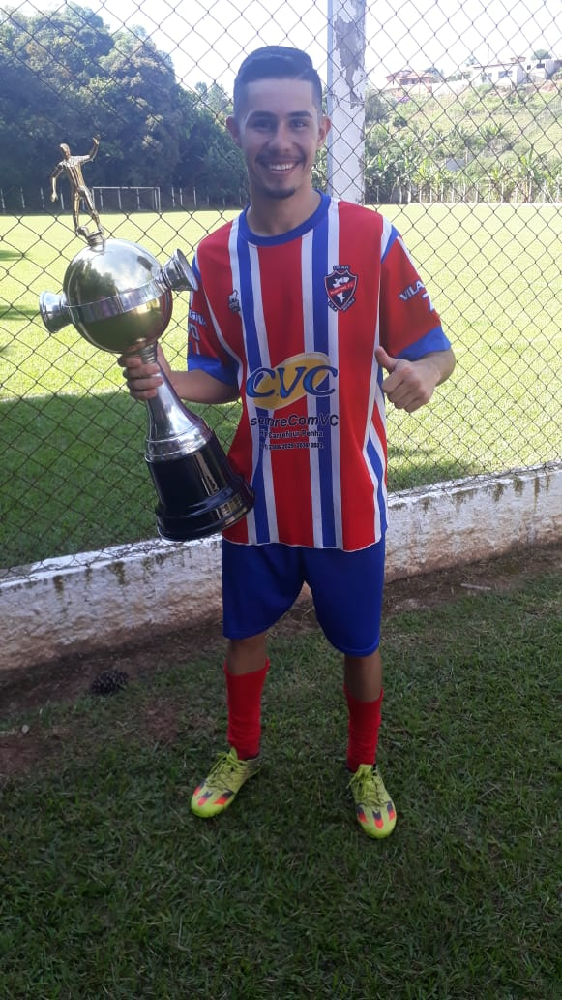
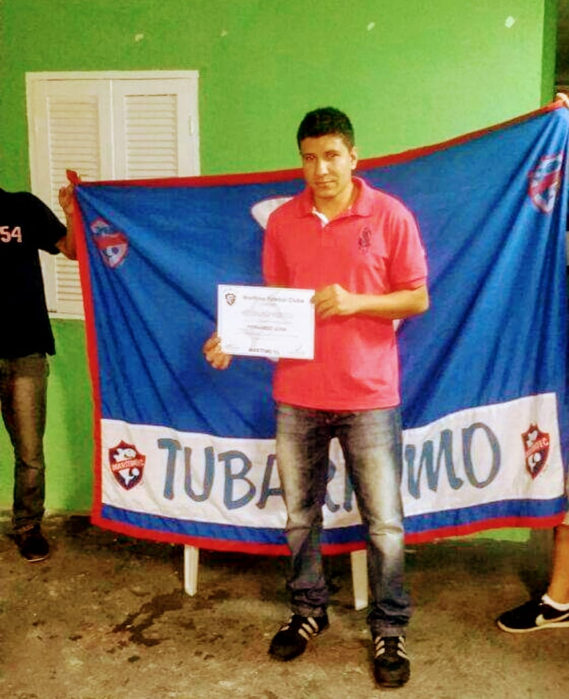

O Marítimo fc e um club fundado em 28/07/1989 por Nelito Brás.Desde 1989 começa a história com títulos resenhas e muitas alegrias, entre idas e vindas altos e baixos assim fomos crescendo e se tornando grande entre a região de Caieiras. Marítimo e conhecido em toda a cidade de Caieiras localizada entre a cidade de Perus e Franco da rocha. Hoje essa família e administrada por Diego brás sobrinho de Nelito Brás (fundador do time). Sua sede fica localizada na rua luis Remédio no bairro da Vila Rosina Caieiras-SP.
-
MARITIMO x SAFUL
Arena Saful Laranjeiras
Sábado 17/10/2020 15:30
-

MARITIMO 4x2 UNIÃO MANDAQUI
Casa verde R,marambaia 802
Sábado 10/10/2020 09:0
-
MARITIMO 1x6 SÃO LUIS
Arena São Luis Mairiporã
Domingo 29/09/2020 09:00
-

MARITIMO 1x1 XI GAROTOS
Arena XI Gatoros Piqueri
Sábado 18/01/2020 15:30
-

MARITIMO 4x2 CLUB MAIRIPORÃ
Amistoso Arena Club Mairiporã
-

MARITIMO 2x0 BEIRA RIO
MAIRIPORÃ Sábado 16:00
-

MARITIMO 5x2 MASTER FC
Arena Caraguata Mairiporã
Sábado 22/09/2020 15:30
-

MARITIMO 4x2 ATLETICO CAIEIRAS
Campo do Eucalipto
Sábado 14/03/2020 14:00
-

MARITIMO 1x5 IPANEMA
Arena Grêmio Rosina


-

Equipe contra o Ipanema FC
Partida válida pela copa rosina
-

Maritimo anos 90
Equipe jovem comandada por NELITO B
-

Maritimo anos 2000
Aqui só teve sucesso. Díficil era ganhar de nois
-

Equipe contra o Celtcs
Partida válida pelo festival
Ginagio esportivo força joven
-

Maritimo Futsal anos 2000
Campeonato Municipal de caieiras
-

Maritimo anos 2000
Goleiro Laeandro B.
-

Festival em Jarinu
Em destaque o atleta LEONARDO
-

Professor Fernando
-

Quarteto mágico
Romarinho, Ederson, Antônio J, Lucas F.


Aquela resenha antes do fut começar


Mais uma resenha depois do futebol